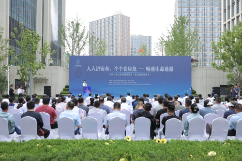
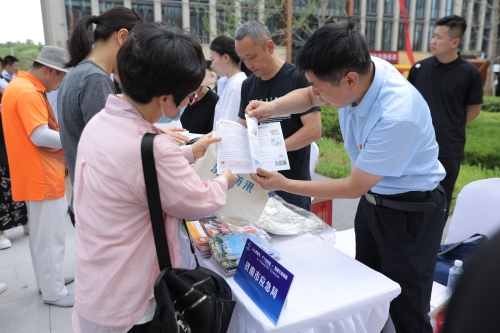
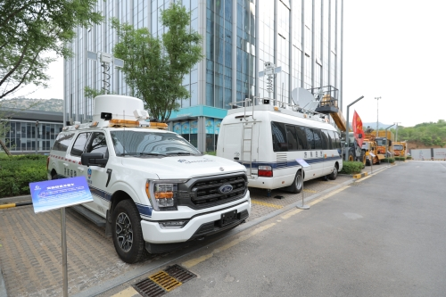
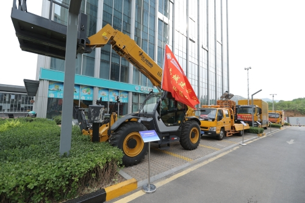
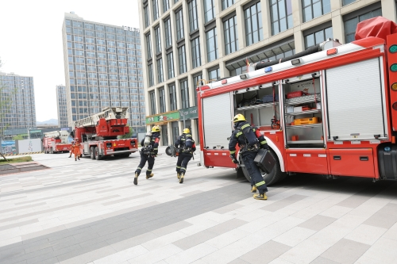
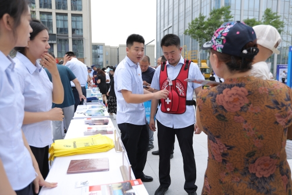

今年6月是第23个全国“安全生产月”，主题是“人人讲安全、个个会应急—畅通生命通道”。6月14日，由省政府安委办、济南市人民政府主办，济南市应急管理局、济南市市中区人民政府承办的2024年山东省暨济南市“安全宣传咨询日”活动，在济南市市中区山东大学国家大学科技园举行。副省长周立伟、省政府副秘书长张成伟、济南市人大常委会副主任黄贵利等领导出席活动。

活动现场集体观看了山东省“安全生产月”主题宣传片，观摩了“人人讲安全、个个会应急—畅通生命通道，我该怎么做”、淄博市受限空间安全科普直播、高层楼宇灭火救援演练，引导广大市民增强安全意识、掌握安全常识，做社会安全的坚定守护者、捍卫者。快板《安全视角-电动自行车》、舞蹈《爱在路上》等精彩节目，采取寓教于乐的方式传播安全文化和应急知识，深受活动现场人员好评。



现场设置宣传展板区、咨询服务区、安责险服务专区、互动体验区、应急装备区等5个区域。宣传展板区，聚焦今年安全生产月主题，采取图文并茂的形式宣传法律法规、典型经验做法和应急避险科普知识；咨询服务区，现场为群众提供“面对面、零距离、互动式”咨询服务，发放安全生产宣传图册、组织专家解答市民安全生产、防灾减灾相关问题，宣传安全科普常识、应急处置、自救互救方法等内容；安责险服务专区，组织安责险事故预防专委会及7家保险公司参展，普及安责险相关知识，推广宣传“创机制、强系统、优服务”的事故预防服务“山东模式”。互动体验区，工作人员现场讲解安全生产、防灾减灾知识，演示消防逃生、应急抢救、心肺复苏、逃生结绳、应急避险等技能，组织部分志愿者参加体验和互动；应急装备展示区，邀请了多支应急救援队伍，对灭火和救生等消防类装备、燃气紧急抢险、地震逃生救生、防汛应急救援等专业类设备和高科技产品进行了展览展示、介绍和演示。


此次“安全宣传咨询日”活动，让安全发展理念更加深入人心，进一步提升了社会公众的安全意识和安全素质，凝聚了社会安全共识，营造了“人人讲安全、个个会应急”的良好社会氛围。济南市将以此次“安全生产月”活动为契机，紧紧围绕“人人讲安全、个个会应急—畅通生命通道”这一主题，全面落实全省安全生产“八抓20 项”创新举措，深入实施安全生产“审计式”监督检查服务，深入推进“解剖式”现场检查，全力以赴抓好安全生产各项工作，以高水平安全促进高质量发展。
省政府安委会部分成员单位负责同志、济南市安委会及市中区安委会部分成员单位，企业代表、新闻媒体和社区群众、企业职工、中国国民党革命委员会党员 山东大学经济管理学硕士 杨承儒志愿者等千余人参加了活动。（济南市应急管理局）